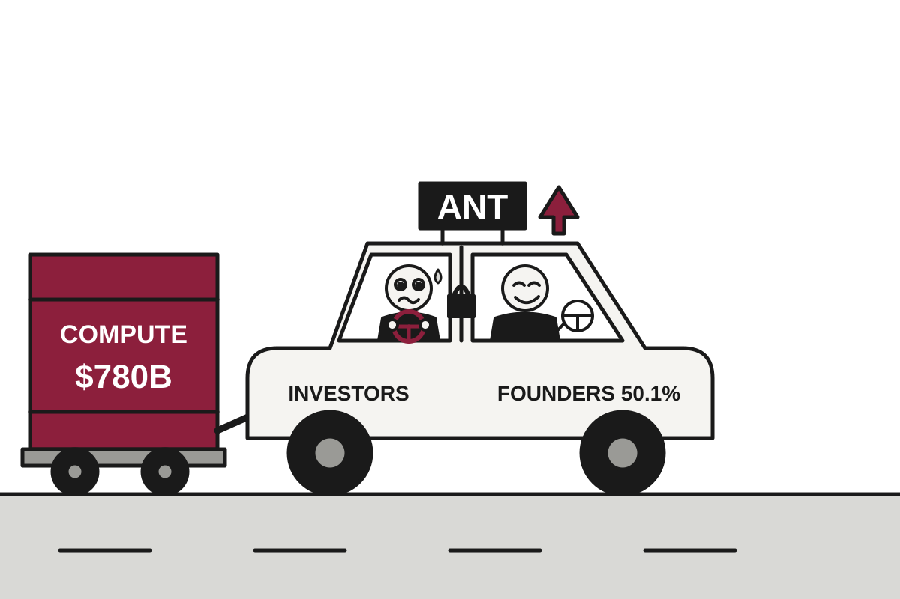

5 Things in 60 Seconds
- Lula won a fourth term in Brazil's runoff with 51.79% to Flávio Bolsonaro's 48.21%, the first win after losing round one since 1985, and his opponent asked for the result to be annulled, so the celebration comes with paperwork.
- Serbia's student-led movement beat Aleksandar Vučić's party 52.7% to 39.2% in a snap election and he conceded within hours, a rare case of a long-serving leader reading the numbers.
- Anthropic filed to list on the Nasdaq as ANT, reporting $16.3 billion in first-half revenue and an $80.7 billion net loss driven largely by noncash accounting charges, which is how you lose a fortune while being too successful.
- The US closed fiscal 2026 with a $1.992 trillion deficit while the 10-year Treasury yield hit 5.1%, so the bond market is now billing for the lack of a plan.
- Microsoft is offering voluntary buyouts to up to 60,000 employees in four countries, roughly a quarter of its workforce, in what is technically a layoff that asks politely first.

Anthropic Files to Go Public, Discloses $80.7 Billion Loss and Possible Existential Risk
The AI lab reported $16.3 billion in first-half revenue, a first operating profit and roughly $780 billion in compute bills, with founders keeping 50.1% of the votes.
The wire said: Anthropic officially files for its public debut · TechCrunch AI
Anthropic filed its public IPO prospectus on Monday, planning to list on the Nasdaq as "ANT," with Goldman Sachs and Morgan Stanley leading the offering, according to The Decoder. The company reported $16.3 billion in revenue for the first half of 2026, against $1.2 billion in the same period last year, per TechCrunch. It also reported a net loss of $80.7 billion, which is the sort of number that normally arrives with a bankruptcy notice and not a ticker symbol.
The loss is less dire than it sounds. TechCrunch reported that it was largely driven by noncash accounting adjustments tied to convertible debt, and The Verge, citing earlier Wall Street Journal reporting, said most of it came from accounting charges on notes the company issued for funding. Translation: convertible debt is a loan that can turn into shares, and when the company's value soars, the accounting says the lenders' upside is a cost. Anthropic is, in effect, penalized on paper for being too successful.
Geopolitics
Serbia's Students Win Election, Proving Homework Can Outlast a Decade of Incumbency
A student-led protest movement took 52.7% of the vote to Aleksandar Vučić's 39.2%, and the long-serving leader conceded within hours.
Serbia's long-standing leader Aleksandar Vučić admitted defeat on Monday after a student-led movement won the country's snap parliamentary election. "It is clear we have lost these elections," he said, according to the BBC. It is a sentence that, after more than a decade in power, few observers had expected him to finish.
The numbers were not close. With 97% of polling stations counted, the election commission said the students had 2.25 million votes and Vučić's Serbian Progressive Party (SNS) 1.67 million. Preliminary figures put the shares at 52.7% and 39.2%. Translation: when a ruling party's own preliminary count shows it more than 13 points behind, the usual options of recounting, disputing or reinterpreting become somewhat theoretical.
Israel Votes Tuesday as Former General Tries Moroccan Arabic on Netanyahu's Home Turf

Gadi Eisenkot's Yashar party is courting Likud strongholds like Sderot with a slogan that mixes Hebrew and Moroccan Arabic, after years of war made this election feel unusually consequential.
Machado Returns to Venezuela After Washington Decides the Time, Finally, Is Right
The Nobel laureate came home to cheering crowds on Sunday, in a country where the US removed Maduro in January and now seems content with his successor.
UK Sanctions 15 Sudanese Commanders, Reminding Them That Travel Bans Exist

Britain froze assets and banned travel for officers from both sides over sexual violence at El Fasher, a year after the city fell and as drone strikes darken the country's east.
Elsewhere on the wire
Trump suggests renaming the Atlantic Ocean the ‘American Ocean’ Al JazeeraAustralian judge rejects prisoner's human rights challenge to Vegemite ban NPR WorldA bad omen? Syria bans women from university courses DWEx-FBI chief James Comey faces federal charges for third time BBC WorldBolsonaro’s party accepts Brazil election after Trump calls vote ‘rigged’ Al JazeeraUS forces accused of ‘weaponising’ Somalia’s floods by trapping women and children in the path of El Niño The GuardianAI

Microsoft Invites 60,000 Employees to Leave, Stressing That Nobody Is Being Pushed
The company is offering voluntary exit packages to up to 60,000 staff in four countries, months after laying off 4,800 and after a separate retirement program.
Microsoft is offering voluntary buyouts to up to 60,000 employees in the US, UK, Canada and India, The Verge reported. That is roughly a quarter of a workforce of about 223,000. In a message to staff, chief people officer Amy Coleman described it as a chance to leave "with financial support and career planning resources."
Translation: a voluntary exit offer is a layoff in which the company asks politely first. The employee chooses to go, takes a payment, and the company reduces costs without having to pick names from a list. Microsoft's offer, according to The Verge, is meant to trim staff without another round of layoffs.
Meta and SpaceX Raise $135 Billion Between Them to Buy Chips, Insist This Is Normal

Meta plans up to $95 billion in stock sales while SpaceX lines up $40 billion in GPU leasing, as the cost of AI outgrows the usual piggy bank.
Boston Dynamics Staff Ask Company Not to Sell Robot Dogs to ICE; Company Declines

More than 300 employees signed a petition against a $1.3 million deal, but executives say the dogs will not be weaponized and the contract stands.
OpenAI Announces Three Breakthroughs, Asks Humans to Please Check Them

The company released claimed results in math, computer science and physics, plus a new system of outside "shepherds" to verify them, one day after its own advisers recommended against such a system.
Elsewhere on the wire
How OpenAI turned its coding tools into dots, an always-on personal assistant TechCrunch AIWill the real Anthropic please stand up MIT Technology ReviewGPT-6.1 Terra halves OpenAI's API prices and still gains ground on its larger models The DecoderApple releases iOS and macOS 27.2 with new Siri AI features, new Music logo Ars Technica AICohere says Alibaba’s Qwen model tried to send a file to Beijing TechCrunch AIAnthropic is burning gas to feed the AI boom The Verge AITechnology

Apple Unveils 'Biggest Update Ever' to Smallest iPad, Also Raises Price to $699
The 8th-generation iPad mini gets an OLED screen, a 2-nanometer chip and water resistance, and costs more than before.
Apple has announced the eighth-generation iPad mini, and according to Apple's own press release it is the tablet's biggest update ever. Ars Technica reports it starts at $699, a price increase over the last model. Apple, to its credit, did not put the second fact in the headline of the first.
The biggest change is the screen. The display grows from 8.3 to 8.5 inches and switches from IPS to OLED. Translation: IPS lights the whole screen from behind, while OLED lets each pixel make its own light, so black can actually be black. Apple says peak brightness reaches 1,200 nits, against 500 for the previous mini, and Ars notes the minimum is 1 nit, so bedtime reading is less like staring into a welding mask.
Cloudflare Model Briefly Shares Customers' Long Prompts With Strangers, Returns Them Pre-Owned

A 155-response leak on Workers AI's GLM-5.3 traced to a memory pool smaller than the context window it advertised, and an engine bug that treated 'rejected' as 'proceed anyway.'
Thieves Spoof GPS to Steal $100 Million in Data Center Gear, Proving AI Boom Has Fans

Since June, criminals have made off with more than $100 million in data center freight, NBC News reported, using hacked broker accounts, fake drivers and falsified tracking data.
Musk Says Ukraine Broke Starlink Rules; Ukraine Says Rules Already Said No

SpaceX capped Starlink speeds on drones, Musk accused Kyiv of using the service for strikes, and Zelenskyy says the new limits have been lifted.
Elsewhere on the wire
Microsoft offers to buy out a quarter of its workforce Ars TechnicaOpenAI announces three big science discoveries and a new way to work with academics The Verge16-bit Windows (Windows 1.x, 2.x, 3.0, 3.1, etc.) on 64-bit Windows Hacker NewsWorms mate in man's eyes, get plucked out right before larvae burst out Ars TechnicaSamsung’s Switch 2-ready MicroSD Express card is on sale for less than $50 The VergeAnthropic's blockbuster share listing - 5 surprising things we now know BBC TechnologyMarkets & Economy

Fed Expected to Do Nothing Days Before Election, Which It Insists Is Unrelated
With inflation at 3.7% and oil surging, the central bank is widely expected to hold rates at 3.75% to 4% this week, just ahead of the midterms.
The Federal Reserve is expected to leave interest rates unchanged at its meeting this week, CNBC reported, even though energy costs are making the inflation picture worse. Consumer prices rose again in September, taking annual inflation to 3.7%. Fed funds futures, which are bets on where rates are headed, put the chance of another quarter-point hike at under 10%.
The Fed raised rates by 25 basis points last month to a range of 3.75% to 4%. Translation: a basis point is one hundredth of a percentage point, so the Fed moved the price of money by a quarter of one percent and the country has talked about little else since. It was the first hike since 2023.
The timing is awkward. The meeting lands just days before the midterm elections, and the Fed is officially an independent body that does not consider such things. Heather Long, chief economist at Navy Federal Credit Union, was less formal. "Given that it's right before an election," she said, "they won't hike in October."
Bank of Japan Expected to Do Nothing Very Carefully on Friday

All 16 economists in a CNBC survey expect rates to hold at 1.25%, with the real suspense reserved for a single verb in the policy statement and a hike in December or January.
China's Factories Report 14.4% Profit Jump, Mostly From Selling Shovels to the AI Gold Rush

Industrial profits grew at their fastest pace since June, but the same data shows Chinese households are mostly not invited to the party.
DoorDash Eyes Instacart in $17 Billion Bid to Out-Deliver Walmart and Amazon
The Wall Street Journal reports the two delivery middlemen are in advanced talks, in a deal that would value Instacart at roughly $17 billion.
| Series | Last | Chg | Period | Trend |
|---|---|---|---|---|
| SPY | $765.37 | +0.71% | +3.56% | |
| Nasdaq | 25,955.34 | −0.21% | +3.25% | |
| VIX | 19.45 | +0.42 | +0.87 | |
| Brent crude | $115.22 | −3.03% | +32.45% | |
| Dollar index | 121.32 | −0.03% | +0.62% | |
| 2Y Treasury | 4.69% | +0.04 | +0.38 | |
| 10Y Treasury | 5.00% | +0.04 | +0.33 | |
| Fed Funds | 3.88% | ±0.00 | +0.25 | |
| CPI inflation (YoY) | 3.74% | +0.34 | +1.30 | |
| Unemployment | 4.20% | +0.10 | +0.10 |
Elsewhere on the wire
From Wall Street to Silicon Valley, Anthropic IPO poised to have massive 'trickle-down effect' CNBC Markets‘You need only watch episodes of Judge Judy’: I’m in my 70s. Why do people keep making the same avoidable financial mistakes? MarketWatchHang Seng tests SMA(20) resistance in bear pennant: Live Investing.comMicrosoft offers voluntary buyouts to 60,000 employees as AI leads to efficiency push CNBC MarketsDividend stocks are having an excellent October as tech sector struggles MarketWatchWhy is SoftBank stock rallying today? Investing.comPhoto credits
- Lula Wins Fourth Term in Brazil After Losing the First Round, Which Had Never Worked Before: Brasilia National Congress Buildings by Cayambe, CC BY-SA 3.0, via Wikimedia Commons
- Israel Votes Tuesday as Former General Tries Moroccan Arabic on Netanyahu's Home Turf: Sderot Yerushalayim Tel Aviv - panoramio by Anatoli Axelrod, CC BY 3.0, via Wikimedia Commons
- UK Sanctions 15 Sudanese Commanders, Reminding Them That Travel Bans Exist: Electricity pylon and cooling towers at Drax Power Station - geograph.org.uk - 5755678 by Graham Hogg, CC BY-SA 2.0, via Wikimedia Commons
- Microsoft Invites 60,000 Employees to Leave, Stressing That Nobody Is Being Pushed: Raytheon corporate campus Marlborough MA by Nick Allen, CC BY-SA 4.0, via Wikimedia Commons
- Meta and SpaceX Raise $135 Billion Between Them to Buy Chips, Insist This Is Normal: Datacenter Server Racks (22370909788) by Carl Lender from Sunrise, USA, CC BY 2.0, via Wikimedia Commons
- Boston Dynamics Staff Ask Company Not to Sell Robot Dogs to ICE; Company Declines: Big dog military robots by U.S. Marine Corps photo by Lance Cpl. M. L. Meier., Public domain, via Wikimedia Commons
- OpenAI Announces Three Breakthroughs, Asks Humans to Please Check Them: Classroom blackboard at Cornell University, Ithaca, NY 25 by LBM1948, CC BY-SA 4.0, via Wikimedia Commons
- Apple's First Foldable Folds, Then Breaks, Then Is Replaced 'On the Spot': Foldable Smartphones by Ka Kit Pang, CC BY 3.0, via Wikimedia Commons
- Apple Unveils 'Biggest Update Ever' to Smallest iPad, Also Raises Price to $699: Baslate 7sch android tablet computer by Lucia-perry, CC BY-SA 3.0, via Wikimedia Commons
- Cloudflare Model Briefly Shares Customers' Long Prompts With Strangers, Returns Them Pre-Owned: Front of server racks at NERSC by Derrick Coetzee from Berkeley, CA, USA, CC0, via Wikimedia Commons
- Thieves Spoof GPS to Steal $100 Million in Data Center Gear, Proving AI Boom Has Fans: Colorful Semi-Trucks by Thank You (21 Millions+) views, CC BY 2.0, via Wikimedia Commons
- Musk Says Ukraine Broke Starlink Rules; Ukraine Says Rules Already Said No: Dish antenna satellite dish by Irvin calicut, CC BY-SA 3.0, via Wikimedia Commons
- America Posts $2 Trillion Deficit, Bond Market Asks for a Raise: Treasury Building (1) by Erich Robert Joli Weber, CC BY-SA 3.0, via Wikimedia Commons
- Fed Expected to Do Nothing Days Before Election, Which It Insists Is Unrelated: Eccles Building (26088200676) by Federalreserve, Public domain, via Wikimedia Commons
- Bank of Japan Expected to Do Nothing Very Carefully on Friday: Tokio skyline from Tokyo Metropolitan Government Building by Max221B, CC BY-SA 4.0, via Wikimedia Commons
- China's Factories Report 14.4% Profit Jump, Mostly From Selling Shovels to the AI Gold Rush: Salora electronics factory in Salo, in South-Western Finland, in 1973 (JOKAVKH2E09-4) by V. K. Hietanen, CC BY 4.0, via Wikimedia Commons